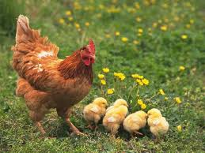
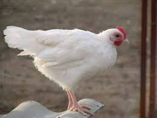

Курица – один самых популярных и распространенных видов домашней птицы. Относится к семейству фазановых, роду гребенчатых кур. Самец курицы называется петухом, птенец – цыпленком. Прародительницей домашней курицы считается банкивская джунглевая курица.
Куры всеядны: они питаются мелкими семенами, травами и листьями, червями, насекомыми и даже мелкими позвоночными.
 